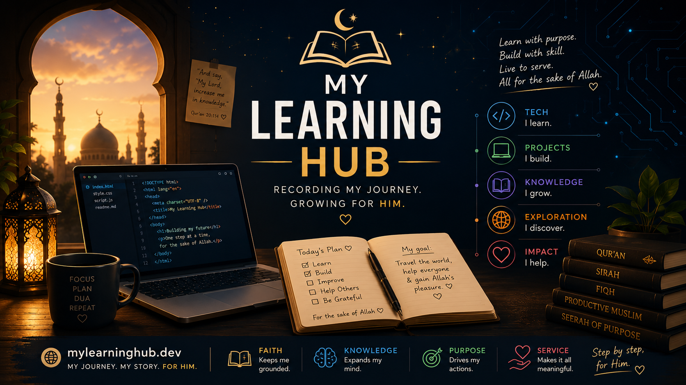
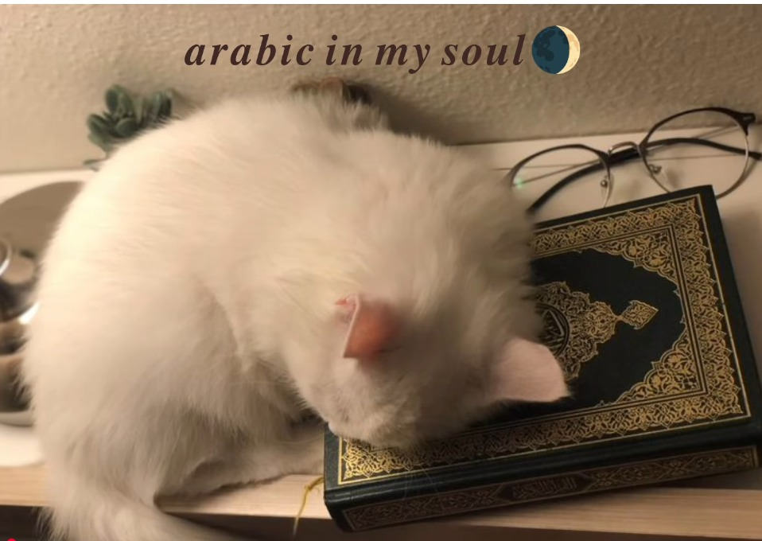

Assalamu Alaikum! I'm Maryam, a B.Tech IT student passionate about technology, Artificial Intelligence, and lifelong learning. This website documents my learning journey and the skills I develop along the way.
#Follow me on:
These are the core technologies I am learning to become a web developer.
I am currently learning html , css , js and be skilled in making websites,In shah Allah.
I use AI tools such as ChatGPT and Claude to understand programming concepts, build projects, and improve my problem-solving skills. Also I use Canva for editing They support my learning, but I make sure to practice the concepts myself.
In my Semester 5 ,I have ML to learn so the roadmap to become a ML Engineer is as follows:
I actually completed till 8th std in Madrasa.And right now I am trying to learn surah al baqarah , Quranic Arabic . Also I do tadabbur while reciting.Next I should start Hadith.
Here are some useful websites for learning:

My future goals are to become a Full Stack Web Developer and a Machine Learning Engineer.I will try to learn more and more and be skilled in these fields. And really create somehting usefull in this life.